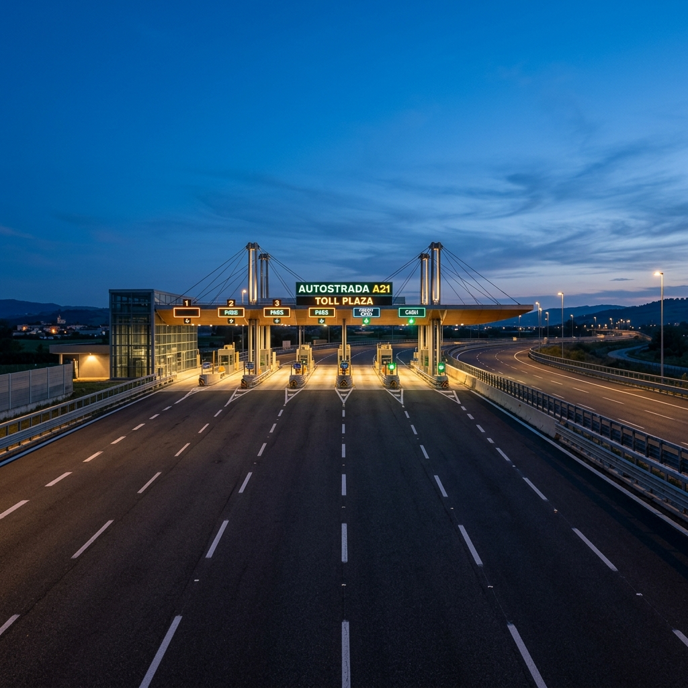
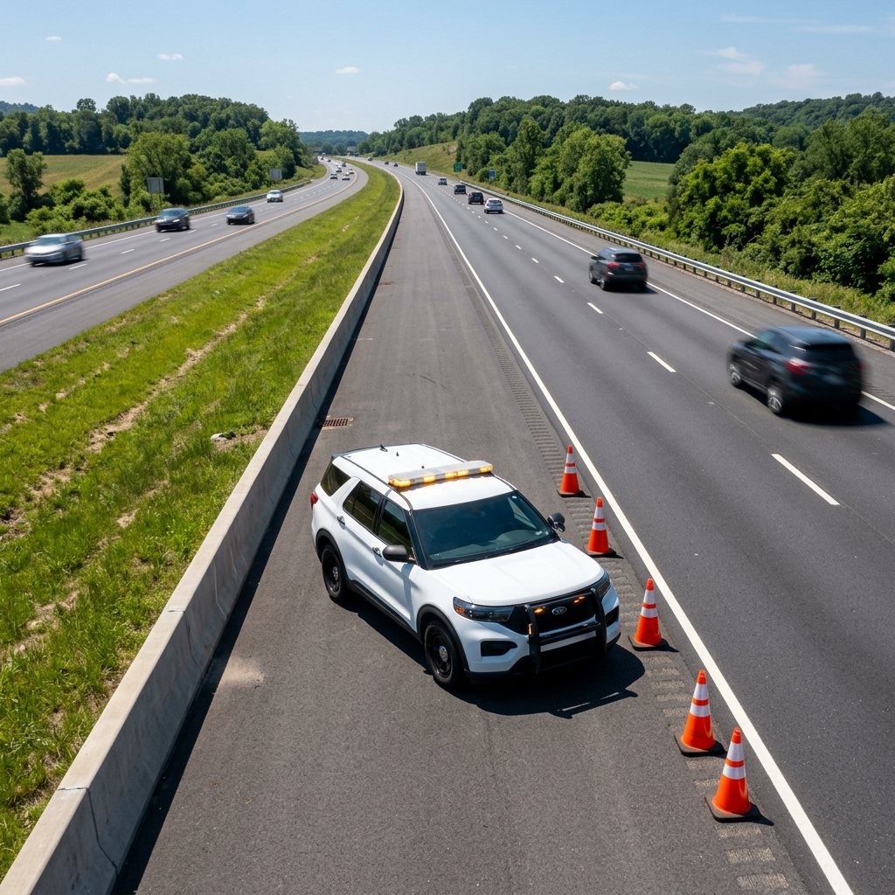

SOP Keselamatan Operasional
Komitmen Jasa Marga dalam mewujudkan Zero Accident melalui standarisasi prosedur kerja yang ketat di seluruh ruas jalan tol di Indonesia.
Kategori Keselamatan Kerja
Standar operasional yang terbagi berdasarkan unit kerja untuk memastikan efektivitas dan keamanan maksimal bagi petugas dan pengguna jalan.
Pemeliharaan Jalan
Prosedur penanganan perkerasan, jembatan, dan sarana pelengkap jalan dengan standar K3 konstruksi yang ketat.
- check_circle Pengamanan Area Kerja
- check_circle Penggunaan Alat Pelindung Diri
Layanan Transaksi
Prosedur pelayanan di Gerbang Tol, pemeliharaan gardu, dan keamanan transaksi elektronik untuk kenyamanan pengguna.
- check_circle Sterilisasi Area Gerbang
- check_circle Penanganan Gangguan Peralatan
Layanan Lalu Lintas
Prosedur patroli, derek, dan penanganan kecelakaan di ruas jalan tol secara responsif selama 24 jam.
- check_circle Respon Darurat Medis
- check_circle Pengaturan Arus Lalu Lintas
Alur Penanganan Kendaraan Mogok
Berikut adalah visualisasi langkah demi langkah petugas layanan jalan tol dalam menangani kendaraan yang mengalami kendala teknis untuk mencegah kemacetan dan bahaya sekunder.
Identifikasi & Pengamanan
Petugas patroli mendeteksi kendaraan mogok melalui CCTV atau laporan pengguna jalan. Unit patroli segera meluncur ke lokasi dan memasang rubber cone untuk sterilisasi bahu jalan.
Pengecekan Awal
Petugas melakukan pengecekan ringan pada kendaraan dan berkoordinasi dengan pengemudi mengenai langkah perbaikan atau evakuasi yang diperlukan.
Evakuasi Derek
Jika perbaikan di lokasi tidak memungkinkan, unit derek dikerahkan untuk mengevakuasi kendaraan ke pintu keluar tol terdekat atau pool derek resmi.

Ringkasan Standar ISO 45001:2018
Konteks Organisasi
Memahami kebutuhan dan harapan pekerja serta pihak berkepentingan lainnya dalam sistem manajemen K3 di lingkungan jalan tol.
Kepemimpinan & Partisipasi
Komitmen manajemen puncak dalam menciptakan budaya keselamatan dan melibatkan pekerja dalam pengambilan keputusan K3.
Perencanaan K3
Identifikasi bahaya secara proaktif, penilaian risiko, dan penentuan peluang untuk meningkatkan kinerja keselamatan operasional.
Evaluasi Kinerja
Pemantauan, pengukuran, analisis, dan evaluasi berkala terhadap efektivitas prosedur keselamatan di seluruh ruas tol.
"Standar ini memastikan bahwa setiap aspek operasional Jasa Marga berfokus pada pencegahan cedera dan gangguan kesehatan terkait kerja, serta menyediakan tempat kerja yang aman dan sehat."
Butuh bantuan segera di jalan tol?
Hubungi Call Center Jasa Marga 24 Jam. Petugas kami siap membantu Anda di lokasi kapan saja.